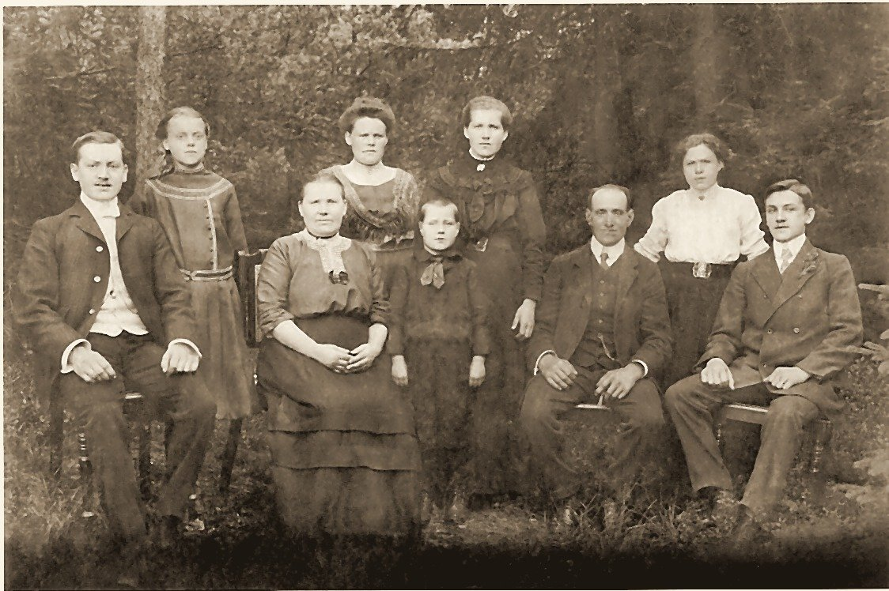
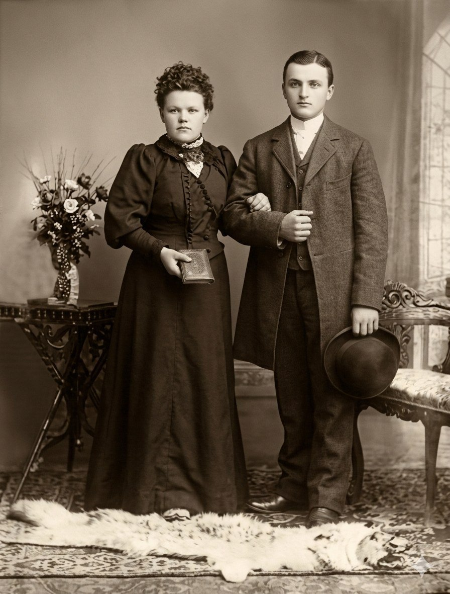
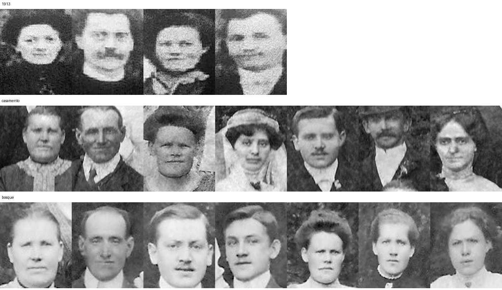

Parte II · O Vapor Formosa e a Floresta
Capítulo 4 — Antes da Partida: Das Rodas de Heumaden à Fumaça de Leonberg
Deslocamento previsto: Marselha, Rio de Janeiro, Laguna. Mar de través, quarentena prolongada. Na serra, mata fechada e promessas que não se cumprem.
49,2° N · 12,1° L, Maxhütte-Haidhof · 49,6° N · 12,4° L, Heumaden, Baviera
Toda frente fria tem uma origem que ninguém vê: um pedaço de ar que, um dia, ficou parado tempo demais no mesmo lugar.
Segundo a anotação do primo Agenor, Johann e Maria, dois católicos da Baviera, casaram-se em 3 de agosto de 1907 em Eibenstock. Se é a Eibenstock que eu conheço dos mapas, ela fica na Saxônia, que era majoritariamente luterana. O que os dois foram fazer lá? Para chegar a essa pergunta, preciso começar de onde cada um deles veio.
Duas horas da madrugada em Heumaden
Heumaden, Alto Palatinado, 7 de abril de 1888
Imagino que a parteira tenha vindo a pé. Em abril, no Alto Palatinado, as estradas de terra ainda guardam a umidade do degelo, e uma carroça faria mais barulho do que a ocasião pedia. Ela se chamava Glas (é tudo o que o livro paroquial diz sobre ela: um sobrenome e uma função, Hebamme), e é provável que conhecesse cada casa da aldeia pela porta da cozinha. Heumaden não era grande: um punhado de casas de pedra e madeira, alguns celeiros, campos ondulados que descem em direção às florestas escuras da fronteira com a Boêmia. A igreja ficava em Moosbach, a paróquia de São Pedro e São Paulo, e era para lá que se levavam os recém-nascidos, os noivos e os mortos.
Às duas horas da madrugada daquele 7 de abril, na casa do pequeno vendeiro (Krämer, diz o livro) Georg Adam Meier, nasceu uma menina. A mãe, Franziska Voit, tinha vinte e seis anos; o pai, vinte e nove. Casados havia pouco mais de três anos (a cerimônia fora em 23 de novembro de 1884, na mesma igreja de Moosbach), já tinham batizado, em junho de 1886, uma menina chamada Maria Katharina. A recém-nascida de 1888 recebeu só o nome de Maria. A família sempre a chamou de Maria Katharina, e o livro de batismos sugere de onde veio a confusão: o nome pertencia à irmã mais velha. Se aquela primeira menina morreu pequena, como tantas, o livro de óbitos de Moosbach ainda não nos disse. Foi batizada no mesmo dia, como se fazia na Baviera católica; a madrinha, diz o livro da paróquia, foi Katharina Reichenberger, lavradora de Burgtreswitz, a aldeia da mãe. Foi ela a madrinha de todas as meninas do casal.
Escrevo estas linhas com uma liberdade que vocês, Matheus e Lucas, precisam conhecer. Eu não sei se chovia naquela madrugada. Não sei se a parteira veio a pé, se havia lamparina acesa, se o pai esperou na cozinha ou no curral. O que sei vem de um livro escrito à mão em letra gótica, que só vou abrir de verdade mais adiante, quando contar a viagem de inverno de 2018. Por ora, basta dizer que os fatos estão lá: o dia, a hora, o nome da parteira, a profissão do pai. O resto é o que um meteorologista faz quando tem uma única estação de observação e precisa desenhar o mapa inteiro: interpola, com cuidado, sabendo que pode errar.
Uma coisa posso afirmar com alguma segurança, porque é climatologia e não genealogia: as madrugadas de início de abril naquela parte da Baviera são frias. O Alto Palatinado fica no coração do continente, longe do Atlântico que amacia os invernos da Renânia. Quando o anticiclone se instala sobre a Europa Central e o ar seco desce do leste, por cima das montanhas da Boêmia, a temperatura despenca durante a noite. Os camponeses tinham nome para esse vento que vinha da fronteira: Böhmischer Wind, o vento boêmio, frio, persistente, que seca a pele e congela as poças. Gosto de pensar que a primeira coisa que a Mota respirou neste mundo foi um pouco desse ar continental, o mesmo ar que, setenta e tantos anos depois, ela diria aos netos, num alemão que eles mal entendiam, que nunca mais tinha sentido.
O pai de Maria, Georg Adam, era filho de Michael Meier, que em Heumaden exercia o ofício de Wagner. A palavra não tem tradução exata em português; Wagner é o que faz Wagen, carroças, e sobretudo as rodas das carroças. Era um ofício de precisão: escolher a madeira, curvá-la, encaixar os raios no cubo, ajustar o aro de ferro aquecido que, ao esfriar, aperta a roda inteira como um abraço. Georg Adam aprendeu o ofício do pai e, ao casar, em 1884, ainda era Wagner. A mãe, Franziska, vinha de Burgtreswitz, aldeia vizinha, filha de Johann Voit, Bauer, camponês proprietário, e de Barbara Woppmann.
Depois de Maria, o livro de batismos de Moosbach registra mais dois filhos do casal: Theresia, em junho de 1891, e Michael, em fevereiro de 1893. Nos batismos, o pai muda de ofício: Wagner em 1886, Krämer (pequeno vendeiro) em 1888 e em 1891, Häusler (morador sem terra de lavoura) em 1893. É uma família descendo a escada, num lugar onde a terra não se multiplicava. Guardem essa frase, porque ela é a chave deste capítulo inteiro.
E depois de 1892 o livro se cala. Nenhum outro batismo, casamento ou óbito daquela casa aparece em Moosbach, enquanto os tios e primos que ficaram em Heumaden seguem enchendo páginas até 1935. Para onde foram Georg Adam, Franziska e os filhos? A resposta, como vocês vão ver no Capítulo 7, estava numa gaveta da família, escrita por uma das irmãs da Mota.
As árvores colaborativas da internet dão a Maria outros irmãos (Johann Baptist, Barbara, Margaretha, Josef, Georg, Anna), mas nenhum deles aparece no livro de batismos de Moosbach com estes pais. Ou nasceram em outro lugar, depois de 1892, ou são de outra família Meier. Fica a pergunta.

O oleiro que não era nosso
Stoffen, Alta Baviera, 1847, e Leonberg, Alto Palatinado, 1878
Nas primeiras versões deste livro, o outro lado da história começava numa aldeia chamada Stoffen, perto de Landsberg am Lech, na Alta Baviera, quase trezentos quilômetros a sudoeste de Heumaden. As árvores da internet diziam que Josef Haas, o pai do Fata, tinha nascido ali em 19 de maio de 1847, filho de Georg Haas, um Ziegelknecht, peão de olaria, e de Maria Anna Albrecht. Achei o batismo, li a palavra Ziegelknecht, gostei dela e escrevi páginas sobre o barro de Stoffen, o gesso de Sandberg e o prumo de Ituporanga, como se fossem três gerações do mesmo ofício.
Era um homônimo. Joseph Haas é um nome comum na Baviera católica, e o batismo de Stoffen é verdadeiro, mas é de outro Joseph. Quem desfez o engano foi o livro de casamentos de Leonberg. Em 4 de março de 1878 (o ato civil fora em 1º de março), o padre registrou o casamento de Haas Joseph, solteiro, Fabrikarbeiter em Leonberg, com Franziska Dengler, filha de mineiro. Na coluna dos pais do noivo está escrito, com todas as letras, Mich. Haas e Kunigunde Stadelmann. Não Georg e Maria Anna. O avô do Fata se chamava Michael.
Ficha do Arquivo: Paróquia de Leonberg (Diocese de Regensburg), livro de casamentos 1874–1919 (Matricula: Leonberg_Bul012), p. 8, ano 1878, registro nº 4, de 4 de março. Noivo: Joseph Haas, solteiro, Fabrikarbeiter em Leonberg; pais: Mich. Haas e Kunigunde Stadelmann. Noiva: Franziska Dengler, de Plattenhof, filha de Margaretha Dengler, depois casada Rockinger. A leitura dos pais do noivo foi feita pelo Antigravity e conferida por mim na imagem. O lugar de origem dos pais, que o Antigravity lê como Etzgersrieth, ainda não conferi.
E aqui vem a parte que me fez largar a caneta. Segundo a leitura do Antigravity, que ainda preciso conferir com os meus olhos, Michael Haas e Kunigunde Stadelmann eram de Etzgersrieth, uma aldeia da paróquia de Moosbach, a uns quatro quilômetros de Heumaden. Se isso se confirmar, a frase que escrevi mais adiante neste capítulo, de que entre as famílias do Fata e da Mota havia cinquenta quilômetros, perde o sentido. Os avôs dos dois teriam ido à mesma igreja de São Pedro e São Paulo, batizado os filhos na mesma pia e enterrado os mortos no mesmo cemitério. Johann e Maria podem ter sido, antes de noivos, filhos de vizinhos.
Guardo essa história do oleiro de Stoffen aqui, em vez de apagá-la, porque ela ensina uma coisa que vale para toda a pesquisa de vocês: um nome igual e uma data plausível não fazem uma pessoa. É preciso conferir os pais, o cônjuge, o lugar. Eu não conferi, e passei anos chamando de trisavô um homem que nunca foi nosso.
A pergunta que o Ziegelknecht me fez, porém, continua de pé, porque vale para os Haas verdadeiros: por que tanta gente da nossa família, dos dois lados do oceano, trabalhou com as mãos em coisas que não eram suas?
A resposta mais honesta que encontrei passa pela herança. Na Baviera antiga (a Alta Baviera, o Alto Palatinado de Heumaden), a terra camponesa não se dividia entre os filhos. Vigorava, pelo costume e muitas vezes pela lei, o que os alemães chamam de Anerbenrecht: o direito do herdeiro único. A propriedade passava inteira a um filho, em geral o mais velho ou o mais novo, conforme o lugar. Os outros recebiam, quando muito, uma compensação em dinheiro, um enxoval, o direito de morar na casa enquanto solteiros. A lógica era a da sobrevivência do sítio: uma fazenda retalhada a cada geração deixa de alimentar quem quer que seja. Na Renânia e no Mosela, de onde vieram os antepassados da minha mãe, a regra era o oposto (a partilha igualitária, que picava a terra em faixas cada vez mais estreitas), e vou contar essa outra história nos capítulos da Parte III. Os dois sistemas tinham o mesmo efeito final: empurravam gente para fora da terra.
Na Baviera, o irmão que não herdava tinha poucos caminhos. Podia ficar como peão na propriedade do irmão. Podia aprender um ofício, e os ofícios eram, em boa parte, os do barro, da pedra, da madeira e do ferro. Podia ir para a cidade, para as fábricas que começavam a surgir no meio do século. Ou podia emigrar. Não sei se Michael Haas era um filho que não herdou. Sei que o filho dele, Joseph, não ficou na terra: foi para a fábrica.
Não pretendo, aqui, transformar tudo em teoria. Volto ao assunto da herança no capítulo 15, onde ele merece mais espaço. Só peço que vocês notem o padrão, porque ele se repete: o ferro de Sandberg, o gesso do Fata, o prumo de Ituporanga. Gerações de homens Haas sustentaram suas famílias construindo coisas que outros iam habitar.
A fumaça da Maximilianshütte
Sandberg, perto de Leonberg, Alto Palatinado, julho de 1884
Em algum momento da juventude (não sei quando, nem por quê), Josef Haas foi parar em Sandberg, junto de Leonberg, a pouca distância de Regensburg. Ali havia, desde meados do século, uma usina siderúrgica: a Maximilianshütte, a “fundição de Maximiliano”, batizada em homenagem ao rei Maximiliano II da Baviera. A usina deu nome, mais tarde, ao próprio município: Maxhütte-Haidhof, que hoje engloba Leonberg e Sandberg. É o caso raro de uma cidade que se chama como a sua fábrica.
Gosto de imaginar o que ele encontrou ali: os altos-fornos, que derretem o minério de ferro com carvão e ar soprado, num fogo que nunca se apaga. Uma siderúrgica do século XIX tinha cheiro, barulho e fumaça; o céu, nos dias de inversão térmica, devia ficar baixo e acinzentado, com a fumaça das chaminés presa sob uma tampa de ar frio. Conheço bem esse fenômeno: é o mesmo que, nas manhãs de inverno do Vale do Itajaí, segura a neblina no fundo dos vales até o sol esquentar o suficiente para rompê-la.
Nos documentos, Josef aparece como Fabrikarbeiter, operário de fábrica. Casou-se com Franziska Dengler. E em 11 de julho de 1884, às cinco horas da tarde, nasceu em Sandberg o filho que eles chamaram de Johann, o meu bisavô, o homem que os netos brasileiros chamariam de Fata. Dois dias depois, em 13 de julho, Josef foi ao cartório civil de Leonberg declarar o nascimento. O registro recebeu o número 47 daquele ano.
Há aqui uma pequena divergência que preciso registrar, porque o livro inteiro é feito de divergências honestamente anotadas. O primo Agenor, na planilha que é a espinha dorsal da nossa genealogia, escreveu que Johann nasceu em “08 de julho de 1884”. O registro civil diz 11 de julho. Fico com o registro, feito dois dias depois do parto pela boca do próprio pai. Agenor trabalhou com o que tinha (memória de família, documentos brasileiros que repetiam a informação de documentos anteriores), e uma diferença de três dias, depois de um século e um oceano, é quase um elogio à precisão dele.
Johann não foi filho único. A planilha do Agenor lhe dá os irmãos Josef, Alois, Georg, Maria, Franziska e Therese. O Antigravity, lendo página por página os livros de batismo de Leonberg, encontrou outra lista de filhos de Joseph Haas e Franziska Dengler: Barbara (1879), Joseph (1880), Kunigunda (1882), Johann (1884), Franz Xaver (1888, morto com doze dias), Georg (1889) e Sebastian (1891). As duas listas só concordam em Josef e Georg. Ainda não conferi essas páginas, e por isso deixo as duas aqui, lado a lado. Uma família operária numerosa, numa vila de fábrica. Nenhum desses irmãos aparece no Brasil.
Há um detalhe nessa leitura que, se for confirmado, resolve outra pergunta. O livro de batismos de Leonberg daria o nascimento de Johann em 8 de julho de 1884, e não em 11. Seria de lá que veio a data do Agenor.

Esta fotografia de estúdio chegou até nós com a legenda genérica de “família do Fata na Alemanha”. Há onze pessoas: um casal mais velho sentado ao centro, rodeado de moças de vestidos claros e rapazes de colete e bigode. É tentador dizer que o casal sentado é Josef e Franziska, e que um dos rapazes de pé é Johann. Eu mesmo, olhando para o homem de bigode à esquerda, julguei reconhecer certa geometria do rosto. Mas não sei. Não há nomes no verso que eu conheça. Prefiro deixar a pergunta em aberto, como uma estação sem dados, a preencher o mapa com um palpite que depois alguém vai citar como certeza.
O que a família guardou sobre Johann está no ofício. O texto do centenário, escrito por minha irmã Marise Haas Lourenço em 2013, diz que ele “vinha de uma família de pedreiros e especializara-se em trabalhar com gesso, emoldurando janelas, portais, altares”. Um estucador, portanto: o artesão que, depois que o pedreiro levanta a parede, chega para dar-lhe forma e ornamento. As cornijas das igrejas barrocas da Baviera, os medalhões dos tetos, as molduras das janelas das casas burguesas: tudo isso era trabalho de estucadores. Era um ofício de mãos finas e paciência: preparar o gesso na consistência certa, correr o molde de perfil ao longo da parede, modelar à mão as folhas, os anjos, as volutas.
Johann vinha de uma cidade de fábrica, filho de operário. Ter chegado ao gesso ornamental é, a meu ver, uma pequena ascensão social: do braço que alimenta o forno à mão que desenha. Marise registrou outro detalhe que me comove: ele era chamado com frequência para servir de intérprete, porque dominava vários dialetos alemães, “ainda muito presentes num país cuja língua não estava unificada”. A Alemanha de 1900 era um país recente, unificado politicamente havia apenas três décadas, e um bávaro do Alto Palatinado podia ter dificuldade real para entender um saxão, um suábio ou um homem do norte. Imagino Johann nas obras, entre equipes de trabalhadores vindos de toda parte, traduzindo ordens do mestre de obras para o dialeto de cada um. Um homem de ouvido bom, que trocava de sotaque como quem troca de ferramenta.
Talvez por isso tenha sido, mais tarde, o contador de histórias que os netos lembram. Quem passa a vida traduzindo aprende que toda frase tem pelo menos duas versões.

Eibenstock, agosto de 1907
Não sei como Johann e Maria se conheceram.
Essa é a frase que mais me custa escrever neste capítulo. Ele, de uma vila siderúrgica perto de Regensburg; ela, de uma aldeia agrícola na fronteira da Boêmia. Entre Sandberg e Heumaden há uns cinquenta quilômetros em linha reta, longe o bastante para que dois jovens dessas famílias dificilmente se cruzassem por acaso numa festa de igreja. E, no entanto, se cruzaram. Se os avós de Johann vieram mesmo de Etzgersrieth, como contei acima, a distância encolhe para quatro quilômetros, e o acaso deixa de ser necessário.
O primo Agenor anotou que eles se casaram em 3 de agosto de 1907, em Eibenstock. Se é a Eibenstock que eu conheço dos mapas, ela não fica na Baviera, mas na Saxônia, nos Montes Metalíferos, perto da fronteira com a Boêmia: uma região de mineração, de bordados e de reservatórios de água, a uns cem quilômetros de Heumaden e bem mais de Sandberg. Ainda não vi o registro desse casamento; não sei em que igreja foi, nem quem foram as testemunhas. A Saxônia era majoritariamente luterana, e os dois eram católicos. Tudo isso faz de Eibenstock uma das perguntas abertas deste livro.
Tenho uma hipótese, que apresento como hipótese. O trabalho de Johann era itinerante por natureza: o estucador vai aonde está a obra. E o de Maria, segundo Marise, também a levava para fora de casa: “Maria, além dos trabalhos domésticos, recebia salário ordenhando vacas.” Uma moça de dezenove anos, filha de um pequeno lavrador com sete filhos, que ordenhava vacas por salário, ou seja, nas propriedades dos outros. É o retrato de uma filha que não ia herdar. O Anerbenrecht de novo: a terra dos Meier, em Heumaden, iria para um só dos irmãos, e os demais teriam de buscar a vida onde houvesse trabalho. É perfeitamente possível que os dois tenham se encontrado longe de casa, ambos trabalhando para outros, num lugar que não era de nenhum deles. Mas é só isso, uma possibilidade.
Há duas pistas que dão um endereço a essa possibilidade. A primeira é uma lembrança da família: quando partiram para o Brasil, em 1913, Johann e Maria moravam em Chemnitz, a grande cidade industrial da Saxônia, a das fábricas de tecidos e de máquinas, que naqueles anos crescia depressa e precisava de pedreiros. A segunda está numa gaveta da família: cartas vindas da Alemanha com o endereço de remetente em Dorfstadt, um bairro de Falkenstein, no Vogtland. Eibenstock fica entre os dois, na beira dos Montes Metalíferos, a poucas dezenas de quilômetros de Falkenstein e a pouco mais de Chemnitz. Se a lembrança estiver certa, o casamento de 1907 deixa de ser um mistério de geografia: não foi uma viagem até a Saxônia, foi um casamento na região onde os dois já viviam e trabalhavam. E um porquê provável apareceu em 2026, nas cartas que conto no Capítulo 7: a família de Maria saiu de Heumaden e foi parar no Vogtland, junto de Falkenstein, onde em 1971 ainda viviam três irmãs e um irmão dela. Se já estavam lá em 1907, Maria casou perto da mãe. E continua a faltar o papel, que está no livro de casamentos de Eibenstock e, se as crianças nasceram lá, nos registros de Chemnitz.
O que Marise diz, e o que a família sempre repetiu, é que eles se casaram jovens, “com o sonho tão peculiar a todos nós de formar uma família”. Johann tinha vinte e três anos; Maria, dezenove. Marise acrescenta uma frase que eu acho certeira: era ela “quem conhecia a lida do campo e, certamente, o ponto de apoio para a grande jornada que estavam próximos a empreender”.

Este é o retrato do casamento deles. Foi feito num estúdio de fotógrafo, diante de um pano pintado, com uma mesinha de flores de um lado e uma cadeira estofada do outro, como se fazia em toda a Alemanha. Maria está de vestido escuro, de mangas bufantes e gola de renda, e segura um livrinho, que deve ser o missal ou o livro de orações. O vestido branco de noiva ainda era luxo de gente rica; as noivas do povo casavam de preto, com a melhor roupa que tinham, e depois usavam essa roupa a vida inteira nos domingos. Johann está de sobretudo, colete e colarinho alto, com o chapéu na mão. Ela se apoia no braço dele. Os dois olham direto para a câmera, sérios, com a cara redonda dos dezenove e dos vinte e três anos. Nenhum dos dois imaginava, naquele dia, que seis anos depois estariam num navio para o Brasil, e que este retrato atravessaria o oceano com eles e chegaria até as mãos de vocês.

Esta outra fotografia sempre me intrigou. É um casamento, tirado ao ar livre, numa clareira entre abetos e bétulas: a noiva de véu e buquê, o noivo de bigode fino, dois homens de cartola, uma dúzia de crianças sentadas na grama com roupas de domingo, senhoras de preto e moças de branco. Chegou até mim como “casamento da família da Mota”, e durante anos me perguntei se seria o de Johann e Maria. Não é. A família reconheceu a Mota sentada à esquerda, de vestido escuro, com um bebê no colo. Então ela já era mãe, e a foto é de depois de 1908. O bebê pode ser Hildegard, Frida, Luisa ou Walter; as folhas nas bétulas dizem que era verão.
De quem era o casamento? Montei os rostos desta foto ao lado dos da foto de despedida de 1913 e dos da família da Mota no bosque.

Vejo três coincidências, e não mais que coincidências. O casal mais velho, sentado à direita no casamento, tem os mesmos rostos do casal sentado no bosque: a senhora de rosto redondo e gola de renda, o senhor de testa alta e orelhas grandes. Se for o mesmo casal, é a família Meier, e eles seriam Georg Adam e Franziska, os pais da Mota. Então o casamento é de um filho ou de uma filha deles. O noivo, por sua vez, lembra muito o homem de bigode sentado à esquerda na foto do bosque. E a noiva, de cabelo escuro, não destoa da mulher da esquerda na foto de despedida de 1913.
Se tudo isso se confirmar, a história se fecha de um jeito que eu não ousaria inventar: este é o casamento de uma irmã da Mota, talvez com Walter Heckel, e foi esse casal que posou ao lado de Johann e Maria em março de 1913, com o filho pequeno, para a foto que ficaria com eles. E foi essa irmã que, cinquenta e oito anos depois, escreveu de Rempesgrün que nunca esqueceu a despedida na estação. São muitos “se”. O nome do noivo e da noiva deve estar no registro de casamento, em algum Standesamt do Vogtland, por volta de 1908 a 1912, e quem tem as chaves dessa porta são os primos de lá.
Onde foi tirada a foto? Fico com o Vogtland, e provavelmente com Rempesgrün ou os arredores. A família pesa mais: os Meier somem dos livros de Moosbach depois de 1892, e em 1971 as irmãs da Mota ainda viviam ali, entre Rempesgrün e Dorfstadt. Um casamento dos filhos deles por volta de 1910 deve ter sido lá. A paisagem confirma o que a família sugere. O Vogtland é mais alto e mais frio que a região de Heumaden, terra de abetos e de bétulas, e é exatamente essa mata escura e fechada que aparece ao fundo das três fotografias: a do casamento, a da família no bosque e a da despedida de 1913. Deixo a decisão registrada como minha, para que vocês saibam que é uma leitura e não um documento. Se um dia aparecer o registro do casamento ou o carimbo de um fotógrafo no verso de alguma cópia, ele manda.
Os primeiros anos do casamento, escreveu Marise, “revelaram-se difíceis e sofridos”. Aqui chegamos à parte do capítulo que eu gostaria de pular.
Johann e Maria tiveram, na Alemanha, duas filhas que morreram pequenas: Hildegard (o Agenor escreve Hildegart) e Frida. Não sabemos as datas de nascimento, nem as de morte, nem a causa. “Por razões que desconhecemos”, diz o texto do centenário, com uma sobriedade que eu respeito. Não sabemos onde estão sepultadas. Talvez em Eibenstock, talvez em outro lugar onde o trabalho tenha levado o casal.
Em 1907, a mortalidade infantil na Alemanha ainda era alta; em muitas regiões rurais e operárias, uma em cada cinco crianças não completava o primeiro ano de vida. Dizer isso não diminui nada. Eu, que tenho dois filhos, não consigo ler “Hildegard e Frida” sem parar um instante. São os dois primeiros nomes de uma lista que este livro vai carregar até o fim, a das crianças que não chegaram: cinco dos doze filhos do Fata e da Mota. Os outros três nomes ainda não vou dizer. Vocês, Matheus e Lucas, existem porque os outros sete aguentaram.
Luisa, Walter e a decisão
Alemanha, 1910 a 1913
Em 1910 nasceu Luisa. Em 1912, Walter. Duas crianças vivas, depois de duas perdas. Não sei onde nasceram; os registros que procuro ainda não apareceram. Sei que estavam vivos e com saúde suficiente, em março de 1913, para atravessar a Europa de trem e embarcar num navio em Marselha, e sei disso por um documento que vou mostrar no próximo capítulo, onde os dois aparecem com as idades de dois anos e um ano.
No fim de 1912, Maria engravidou outra vez. Pelo menos é o que se conclui do texto de Marise, porque o primo Agenor registrou as coisas de outro modo.
Na planilha dele, há uma filha chamada Gertrudes nascida na Alemanha em 22 de outubro de 1911, que teria vindo no navio com um ano de idade. O texto de Marise diz outra coisa: que Gertrudes nasceu no Brasil, em maio de 1913, e que Maria embarcou grávida dela. Essas duas versões não podem ser verdadeiras ao mesmo tempo, e no próximo capítulo vou colocá-las lado a lado, com o documento que pesa mais. Por ora, sigo Marise: em março de 1913, Johann e Maria tinham dois filhos pequenos e um terceiro a caminho.
O que leva um casal assim a partir?
Marise fala da “grande crise econômica e política” da Alemanha e da “iminência de uma guerra” que “assombrava o casal”. Gosto que ela não tenha simplificado. A Alemanha de 1912 era, ao mesmo tempo, uma potência industrial em plena expansão e um país de enormes desigualdades, com o custo de vida subindo mais rápido que os salários de operários e trabalhadores rurais. E o ar estava carregado. As crises nos Bálcãs, a corrida naval com a Inglaterra, os orçamentos militares crescendo ano a ano: tudo isso chegava às aldeias pelos jornais e pelas conversas de taberna. Ninguém sabia exatamente o que ia acontecer, mas muita gente pressentia que alguma coisa ia acontecer. Em meteorologia, chamamos isso de instabilidade: a atmosfera acumula energia, a coluna de ar fica pronta para subir, e falta apenas um gatilho.
Para um jovem pai de família, a guerra significava uma coisa muito concreta: o alistamento. Johann tinha vinte e oito anos. É possível (e aqui volto a especular) que o medo de ser convocado e deixar Maria sozinha com os filhos tenha pesado tanto quanto a falta de dinheiro.
Do outro lado do oceano, havia o Brasil. Desde o fim do século XIX, o governo brasileiro e os governos estaduais do Sul faziam propaganda na Europa para atrair colonos: terra a preço baixo, pagável em prestações, ferramentas, sementes, auxílio nos primeiros meses. Em Santa Catarina, o governo federal havia aberto pouco antes um núcleo colonial no interior, nas encostas da serra, com o nome de Anitápolis, em homenagem a Anita Garibaldi, a heroína de Laguna. É para lá que os Haas iriam, ainda que isso não estivesse claro no dia em que decidiram partir. Marise escreve que eles iam “para o paraíso”, com aspas que são dela, e que trazem toda a ironia de quem sabe o que veio depois.
Eu suspeito que a terra, ela mesma, tenha sido o argumento decisivo. Um pedreiro filho de operário e uma ordenhadeira filha de um pequeno lavrador com sete filhos: nenhum dos dois ia herdar um pedaço de chão na Baviera. Nem que vivessem cem anos. O Anerbenrecht tinha fechado essa porta antes mesmo que eles nascessem. No Brasil, diziam os folhetos, havia lotes coloniais esperando por quem quisesse trabalhar.
Marise insiste num ponto que eu acho importante e que não quero apagar: a decisão “não foi arbitrária nem unilateral”. Os dois vinham de famílias sólidas, nas quais “o peso da opinião dos pais era tão grande quanto o respeito que os filhos tinham por eles”. Houve conversas, opiniões contra e a favor. Imagino a mesa da cozinha em Heumaden, numa noite de inverno, com Georg Adam e Franziska ouvindo a filha dizer que ia embora com o marido e os netos para um país do qual mal sabiam o nome da capital. Imagino o silêncio depois.
Und wenn ihr nicht zurückkommt? E se vocês não voltarem?
Não sei se alguém disse essa frase. Mas alguém deve ter pensado nela, porque a fotografia que eles tiraram antes de partir tem a cara de uma despedida definitiva. Marise escreveu que eles se despediram “com gestos que traduziam a certeza de que nunca mais se encontrariam”. Ela estava certa: nunca mais se encontraram.
Quero terminar este capítulo com um exercício que faço com frequência no trabalho. Quando analiso uma tempestade, procuro o momento em que ela se tornou inevitável: o instante em que o ar quente e úmido encontrou a frente fria e começou a subir, e a partir do qual nenhuma força pequena poderia mais desfazê-la. Na genealogia dos Haas, esse instante não aparece em nenhum documento. Ele aconteceu dentro de duas pessoas, numa data que ninguém anotou, no inverno de 1912 para 1913. Antes dele, os Haas eram bávaros com um futuro bávaro, provavelmente pobre, provavelmente marcado pela guerra que viria. Depois dele, éramos nós.
No início de março de 1913, Johann, Maria, Luisa e Walter se puseram diante de um fotógrafo, ao lado de parentes que ficariam. No dia 7, a fotografia ganhou uma inscrição: Zum Andenken! vor unserer Abreise nach Brasilien (“Para recordação! Antes da nossa partida para o Brasil”). Depois, imagino, vieram as malas, os livros que Marise diz que eles levaram, as roupas de inverno que de nada serviriam do outro lado, e uma estação de trem.
O trem ia para o sul. Para a França, para o mar.
Para vocês descobrirem
- Por que dois católicos da Baviera foram se casar em Eibenstock? O livro de casamentos de lá deve dizer em que igreja foi e quem foram as testemunhas.
- Michael Haas e Kunigunde Stadelmann, os avós do Fata, eram mesmo de Etzgersrieth, vizinha de Heumaden? Procurem o batismo de Joseph Haas no livro de Moosbach, por volta de 1850.
- Qual das duas listas de irmãos do Fata está certa, a do Agenor ou a dos livros de Leonberg?
- Quem assinou as cartas de Dorfstadt, em Falkenstein, que estão numa gaveta da família?
- Onde estão sepultadas Hildegard e Frida, e do que morreram? Se as duas nasceram em Chemnitz, comecem pelos registros de lá.
- De quem é o casamento na clareira, em que a Mota aparece com um bebê no colo? Os noivos são a irmã da Mota e Walter Heckel? O registro de casamento, por volta de 1908 a 1912, deve estar num Standesamt do Vogtland.
- Quem são as onze pessoas da fotografia de estúdio da família do Fata? Mostrem a foto aos primos mais velhos: alguém sabe dizer um nome?